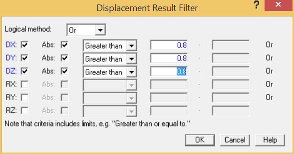
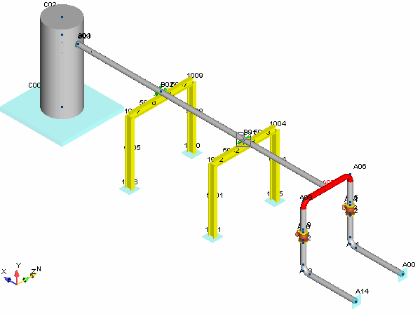

Applying Result Filter Criteria
After examining the point information for A07, we note deflections exceeding our design criteria of 0.8 inches at point A07. In order to identify all points meeting these criteria, we will utilize AutoPIPE's Result filter option.
- Select Result > Filters > Displacement.
- The Displacement Result Filter dialog is displayed as shown below.

- By using the filter option, AutoPIPE will automatically highlight all points on the model that satisfy the filter condition for visual checking. Note that these points are added to the existing selection set. Furthermore, we can use this same filter condition to generate a report that contains only those points that meet the filter criteria. In this case, we wish to report only displacements greater than .8 inches. Enable the DX, DY, and DZ fields, then enter 0.8 {20} in the numeric field for each of the offsets as shown in the dialog above.
- Press OK to close the dialog. The model appears as shown below. AutoPIPE automatically highlights the section of the model that satisfies the filter condition.
This section of the model is selected to indicate that it meets the filter criteria.
